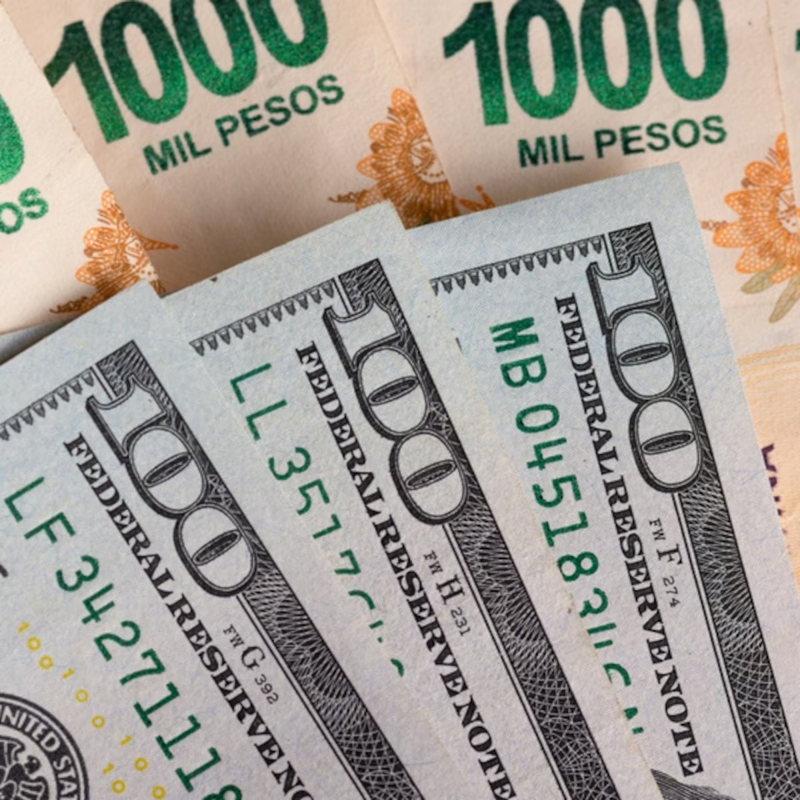

Sube el dólar: cuánto falta para que alcance el techo de la banda y cuándo puede intervenir el Banco Central
El dólar sube y se acerca al techo de la banda de flotación. El mayorista acumula en lo que va de julio un alza del 13% y cotiza a $1373, en un contexto de presión cambiaria con menos oferta y demanda sostenida, que no cede, aun con las altas tasas de interés en pesos que ofrecen los instrumentos de deuda del Tesoro. Ese ajuste hacia arriba del dólar mayorista, que se replica en el minorista, el blue y los tipos de cambio financieros, lo acerca al límite superior de la banda de flotación, que hoy se ubica en $1451.